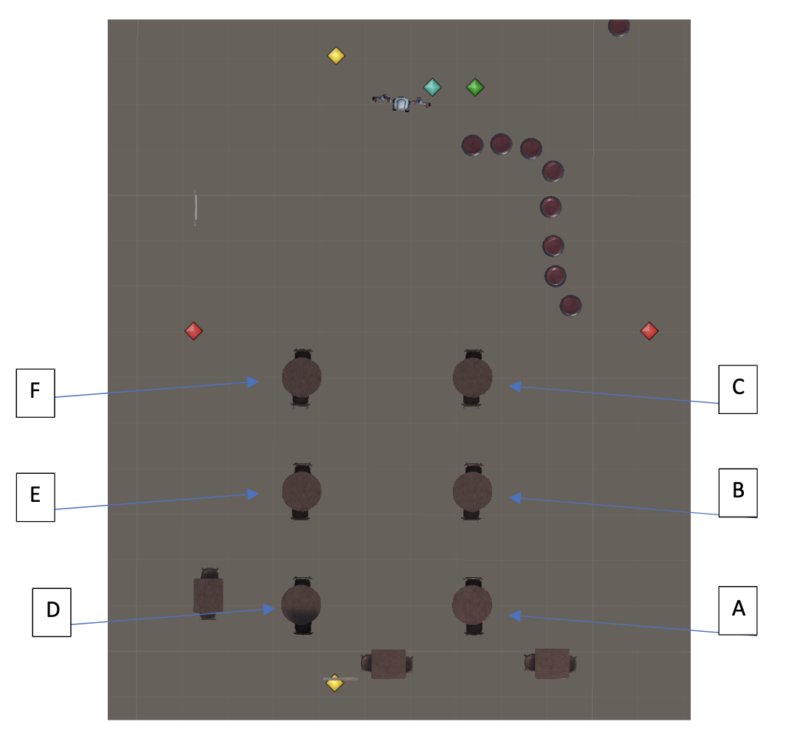

Below is an image of the restaraunt's table layout from above.
The server will always start at the location marked by the red square. The server will be heading to one of the four tables and will stop at one of the four green squares.
You will be "sitting" in one of the two chairs at the table labeled 'A'. Because of this, not all the other tables will be visible to you.
Remember, your task is to determine whether the server is approaching your table or a different table.
